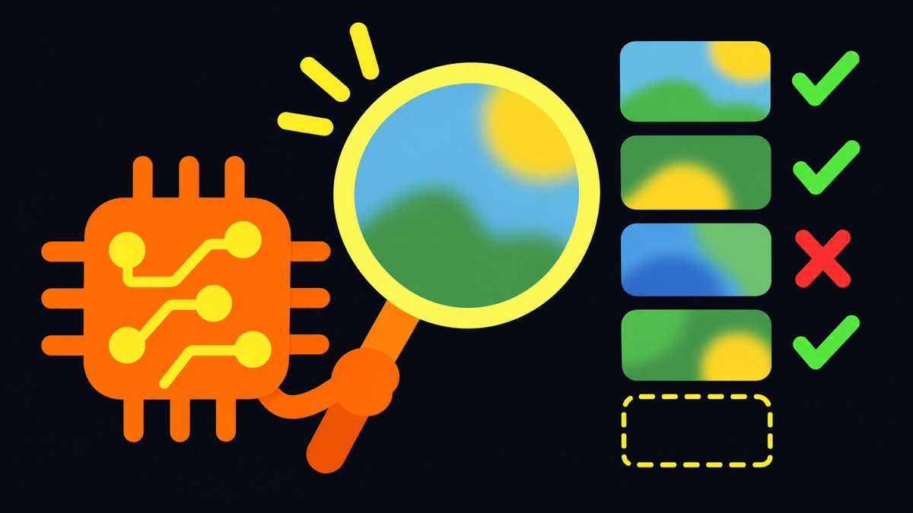
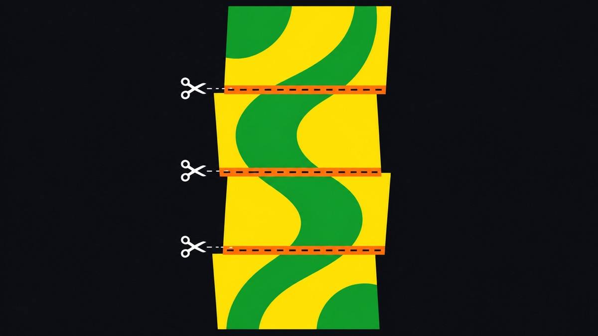
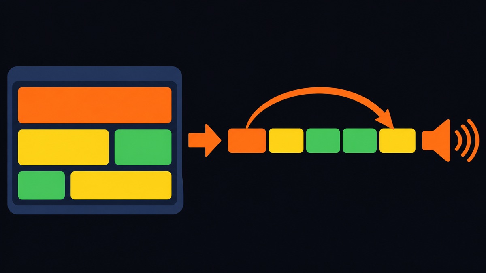
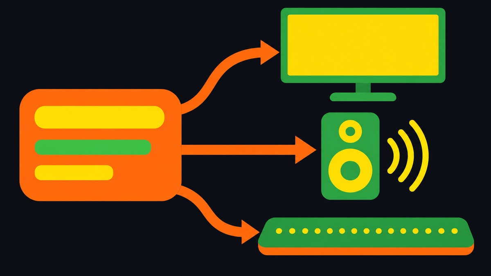

다섯 칸으로 보기
수업에서는 어떤 미디어 문제든 아래 다섯 칸으로 진단합니다. 아래 칸이 흔들리면 그 위는 모두 흔들립니다. 온글이 상품 상세 이미지를 읽어 주는 과정을 이 다섯 칸에 놓으면 다음과 같습니다.
- 01 신호·원본현실의 어떤 정보를, 어떤 단위로 표현했는가?쇼핑몰이 가격·옵션·주의사항을 글이 아니라 그림으로 올렸다 → 원리 1
- 02 형식·압축저장하고 압축하면서 무엇을 버렸는가?긴 그림을 줄이고, 자르고, JPEG로 다시 압축했다 → 원리 3
- 03 추출·인식재생·복원·분석할 때 어떤 오류가 생기는가?AI가 글자를 읽다가 놓치거나 지어냈다 → 원리 2
- 04 맥락·구조꺼낸 정보를 무엇에 붙여야 되찾을 수 있는가?제목·분류·"AI 추출" 표시를 붙이고, 건너뛰는 키를 만들었다 → 원리 4, 원리 5
- 05 활용·검증이 결과가 실제 사용 목적에 적합한가?정답지로 재고, 시간을 재고, 실행 조건을 남겼다 → 원리 6, 원리 7
-
01 신호·원본
글자를 그림으로 만들면 정보가 사라진다
원리
같은 내용이라도 글로 담으면 기계가 읽을 수 있고, 픽셀로 담으면 읽을 수 없습니다. 사람에게는 같은 "가격 12,900원"이지만, 컴퓨터에게 한쪽은 글자 일곱 개이고 다른 쪽은 색이 다른 점 수만 개입니다. 콘텐츠는 같아도 표현이 바뀐 것입니다.
우리가 확인한 것
- 국내 쇼핑몰은 가격, 옵션, 영양정보, 주의사항을 세로로 긴 상세 이미지 한 장에 넣는 경우가 많습니다.
- 이런 페이지에서 기존 스크린리더는 그림의 대체 텍스트만 읽습니다. 대체 텍스트가 "상세 이미지"뿐이면 사용자가 들을 수 있는 정보가 없습니다.
-
03 추출·인식
AI 판독은 복원이 아니라 추정이다

원리
한 번 버린 정보는 되돌아오지 않습니다. AI가 그림 속 글자를 읽는 것은 남은 픽셀로 원래 글자를 추정하는 일입니다. 그래서 오류는 두 가지로 나타납니다. 있는 글자를 빠뜨리는 놓침, 없는 내용을 그럴듯하게 만드는 헛짚음입니다.
우리가 확인한 것
상세 이미지 읽기 측정 (Gemini, 같은 날 12분 간격 두 번 실행) 사례 정답 문구 첫 실행 두 번째 실행 직접 그린 그림 10 인식 100% 인식 100% 취소선·작은 글씨·표 11 인식 100% 인식 100% 실제 쇼핑몰 상품 15 인식 87% (영양정보 2개 놓침) 인식 100% 평가용 쇼핑몰 상품 17 시간 초과 실패 인식 100% - 놓침은 정답 문구가 결과에 있는지로 자동으로 잴 수 있었습니다.
- 틀린 숫자나 지어낸 문장은 자동으로 잡히지 않아, 사람이 결과를 한 줄씩 봐야 했습니다.
-
02 형식·압축
자르는 곳에서 정보가 깨진다

원리
표본화와 분할은 "어디서 자를지"를 정하는 선택입니다. 오디오의 샘플링레이트, 이미지의 해상도, 비디오의 프레임레이트가 모두 얼마나 촘촘히 자를지의 문제이듯, AI에 그림을 보낼 때도 크기와 경계를 정해야 합니다.
우리가 확인한 것
세로로 수천 픽셀인 상세 이미지는 AI에 한 장으로 보내면 글자가 너무 작아집니다. 그래서 다음처럼 나눠 보냅니다.
온글이 상세 이미지를 나누는 값 설계값 온글의 값 왜 폭 최대 1000px로 줄임 AI가 받는 크기에 맞춤. 많이 줄일수록 작은 글씨가 먼저 뭉개짐 조각 높이 1000px 한 조각에 글자 크기를 유지할 만큼만 담음 겹침 80px 경계에 걸친 글자 줄이 두 조각 중 한쪽에는 온전히 들어가게 함 압축 JPEG, 용량 제한을 넘으면 품질을 낮춤 보낼 수 있는 크기 안에 맞춤. 대신 글자 가장자리가 흐려짐 -
04 맥락·구조
공간을 시간으로 바꾸면 탐색이 필요하다

원리
화면은 공간에 펼쳐져 있어 눈으로 한 번에 훑어볼 수 있습니다. 음성과 점자는 시간 순서로만 전달됩니다. 웹페이지를 소리로 바꾸는 것은 2차원 공간을 한 줄의 시간축으로 펼치는 일이고, 펼치면 원하는 곳까지 가는 데 시간이 듭니다.
우리가 확인한 것
- 페이지를 처음부터 끝까지 읽으면 "배송비"에 닿기까지 오래 걸립니다.
- 그래서 제목(H), 링크(K), 버튼(B)처럼 한 글자 키로 건너뛰는 이동과, 페이지 요약, 페이지에 묻는 질문 응답을 만들었습니다. 요약과 답에는 근거가 된 원문 위치를 붙여 바로 이동할 수 있게 했습니다.
- 탐색 명령 34개가 모두 기대한 위치로 이동했고, 같은 설문을 AI 두 개에 물었을 때도 "한 글자 키 이동"이 가장 높은 점수(평균 4.5점)를 받았습니다.
-
04 맥락·구조
출력 매체마다 대역폭이 다르다

원리
매체마다 한 번에 전할 수 있는 양이 다릅니다. 화면은 한 번에 수천 글자를 보여 주지만, 음성은 한 번에 한 문장이고, 점자 디스플레이는 한 줄에 20~80칸입니다.
우리가 확인한 것
- 점자: 글을 한국 점자 규정에 따라 점자 칸으로 바꾸고, 기기 칸 수에 맞게 줄을 나누는 일은 스크린리더가 합니다. 기기는 받은 점 배열대로 핀을 올릴 뿐입니다. 온글은 가상 점자 디스플레이로 이를 구현했고, 규정 예문 141개와 모두 일치했습니다.
- 음성: 속도를 높일 수는 있지만, 문장이 길면 듣는 사람이 기억해야 할 양이 늘어납니다. 그래서 AI 요약은 한 항목에 정보 하나만 담고, 최대 7개까지로 제한했습니다.
- 화면: 화면을 일부 볼 수 있는 사람이나 옆에서 돕는 사람을 위해, 지금 읽는 글을 자막과 테두리로 함께 보여 줍니다.
-
05 활용·검증
시간도 미디어 경험의 일부다
원리
처리에 걸리는 시간은 품질과 맞바꾸는 관계에 있습니다. 결과가 정확해도 너무 늦게 나오면 사용자는 기다리지 않고 다른 방법을 찾습니다.
우리가 확인한 것
- 상세 이미지 읽기에 걸린 시간은 같은 사례에서도 130초에서 21초까지 흔들렸고, 한 번은 시간 초과로 실패했습니다.
- 같은 설문을 AI 두 개에 물었을 때 가장 낮은 점수를 받은 문항이 "AI 결과를 기다리는 시간과 안내"(평균 2.5점)였습니다.
- 그래서 분석하는 동안에도 다른 항목으로 이동할 수 있게 하고, 진행 상황을 소리로 알려 주며, 끝난 결과는 AI 결과 모음에서 다시 들을 수 있게 했습니다.
-
05 활용·검증
흔들리는 결과는 조건을 기록해야 한다
원리
측정을 다시 해 볼 수 있으려면 측정 조건이 남아 있어야 합니다. AI는 같은 입력에도 매번 조금씩 다른 결과를 내므로, 한 번 잰 숫자만으로는 좋아졌는지 나빠졌는지 말할 수 없습니다.
우리가 확인한 것
- 원리 2의 두 실행은 12분 간격인데 결과와 시간이 크게 달랐습니다. 그런데 결과 파일에 모델 이름과 코드 버전이 없어서, 차이가 AI의 흔들림인지 코드 수정 때문인지 가릴 수 없었습니다.
- 이후에는 결과마다 공급자, 모델, 코드 버전(커밋), 날짜를 함께 저장하도록 바꿨습니다.
- 평가도 한쪽에만 맡기지 않습니다. 같은 설문을 팀원, 실제 사용자, AI에게 따로 받아 세 점수를 나란히 비교합니다. AI 점수는 문서를 읽고 매긴 기준점일 뿐 사용 경험을 대신하지 않습니다.
더 보기
- 온글 설치·사용 가이드: 직접 설치해 써 볼 수 있습니다.
- 연습용 쇼핑몰 온글몰: 상품 찾기부터 주문까지 온글로 해 볼 수 있습니다.
- GitHub 저장소 (새 탭): 코드와 측정 기록, 평가 계획 문서가 있습니다.